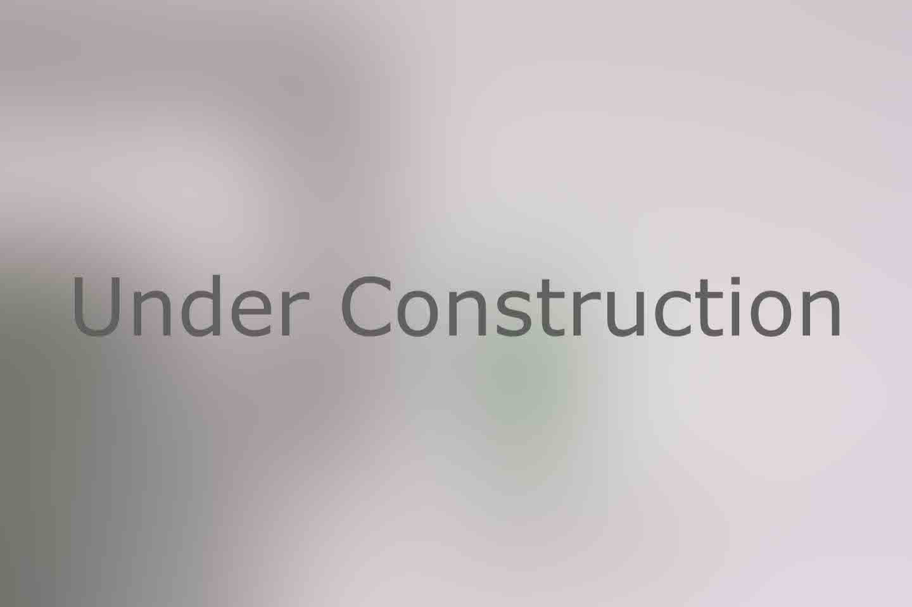

---
# Feel free to add content and custom Front Matter to this file.
# To modify the layout, see https://jekyllrb.com/docs/themes/#overriding-theme-defaults

layout: home

---

		
<div class="main-container">
					
		<section>
			<div class="container">
				<div class="row">
					<div class="col-md-8 col-md-offset-2 col-sm-10 col-sm-offset-1 text-center">
						<h4 class="uppercase mb16">Logo Designs</h4>
						<!-- <p class="lead mb80"> -->
							<!-- Examples of logos I have designed. -->
						<!-- </p> -->
					</div>
				</div>
				<!-- <div class="row mb64 mb-xs-32"> -->
					<div class="col-sm-6">
							<div class="image-tile hover-tile text-center">
									
									<div class="hover-state">
										<a href="ptb.html">
											<h3 class="uppercase mb8">Plead the Belly</h3>
											<h6 class="uppercase">Podcast Logo Case Study</h6>
										</a>
									</div>
								</div>
					</div>
					<div class="col-sm-6">
							<div class="image-tile hover-tile text-center">
									
									<div class="hover-state">
										<a href="#">
											<h3 class="uppercase mb8">Under Construction</h3>
											<!-- <h6 class="uppercase">Product Design</h6> -->
										</a>
									</div>
								</div>
					</div>
				</div>
			</div>
		</section>